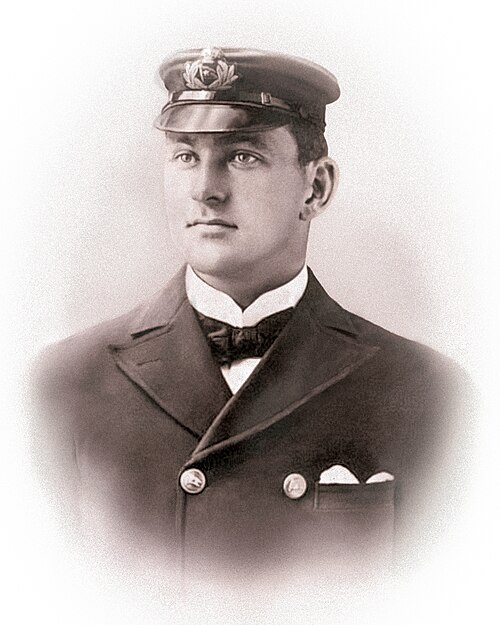
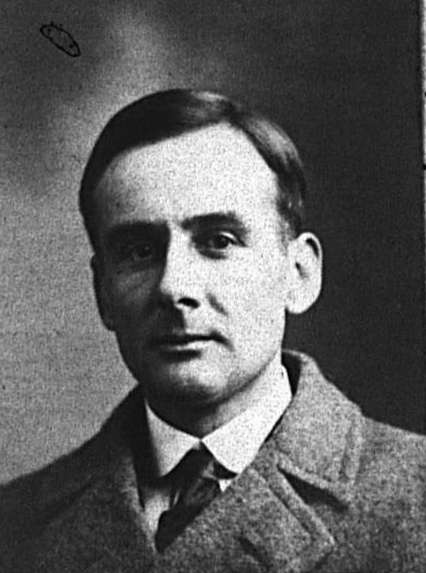
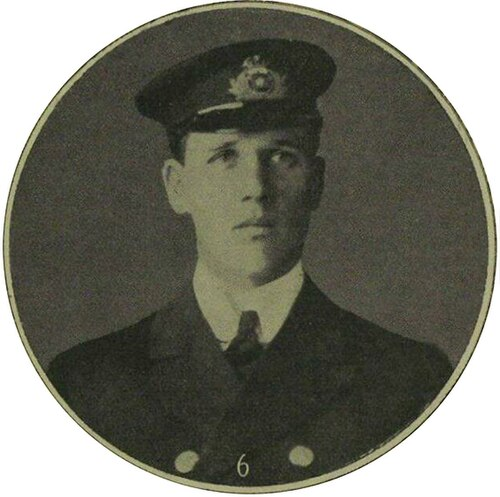

Titanic Week 2026 Live Tracker
Bridge, Marconi Room, and Engine Room board
Navigation & Bridge
Officer of the Watch

Officer image unavailable
Also on watch

Image unavailable

Image unavailable
Marconi & Wireless
Latest Wireless Message
—
—
—
Engine Room
Boilers & Engine Orders
—
—
Simplified to current order and boiler state only.
Chart
Southampton – Cherbourg – Cobh route
Actual route so far
Indicative planned route
Approximate reported ice region